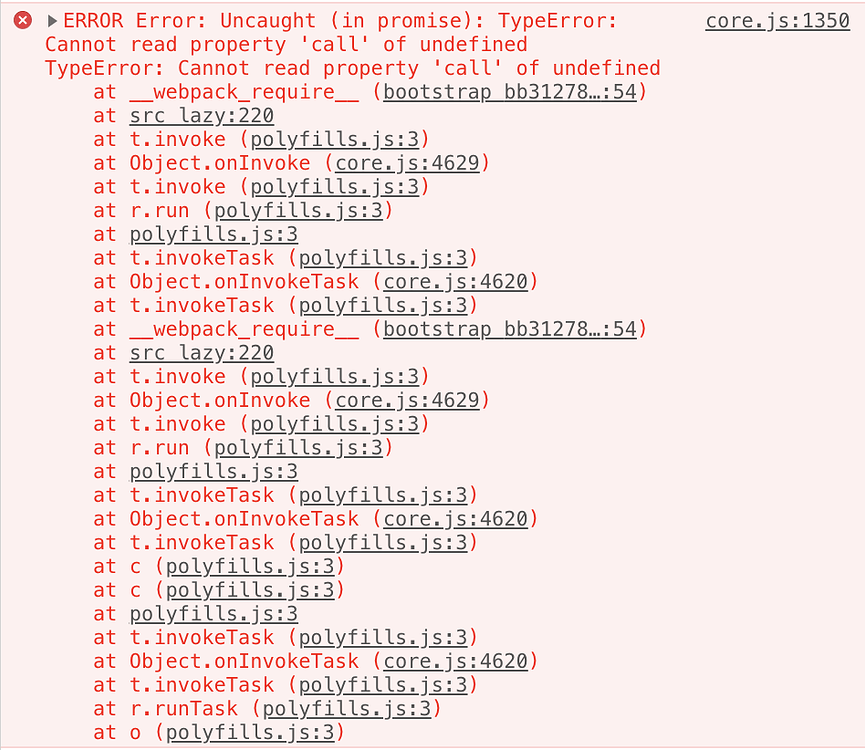

Rust
A language empowering everyone to build reliable and efficient
software
Introduce by a beginner for Beginners!
Created by
Ben Hu
Motivations
- It’s a System language to build low-level stuff
As a programming language
- Multi-paradigm
- Designed for performance and safety
-
Originally designed by Graydon Hoare at Mozilla Research, with
contributions from Dave Herman, Brendan Eich, and others.
Basic Data Type
Rust is a statically typed language, so it must know the types of
all variables at compile time.
Common Data Types
- Scalar Types
- integers, floating point, Booleans, characters
- Compound Data type
- Custom Data Type
Scalar Types
-
Integer Type: 8, 16, 32, 64, 128 and arch (signed and unsigned)
- Floating Point: f32 and f64 (IEEE-754)
- Numeric Operations: +, - , *, /, %(remainder)
- The Boolean Type: true, false
-
The Character Type: single quote, ‘c’, our bytes in size,
represents a Unicode Scalar Value
Array
length is fixed; same type
Vector
length is dynamically allocated
Control flow
if, else, loop, while
Ownership System
Rust way to manage memory
Other Languages
- No Garbage Collector (GC)
- C
- Fast and preformat
- Required work to handle, bug of source
- With GC
- Python, Java, Go, Javascript,...
- Allow we focus on application logic
- sacrifices some speed
Rust ownership System
- Goal is to have advantages of both worlds
- Rust compiler do most of GC work
-
Compiler handle allocate and work at compile time (No effect on
run-time performace)
- Require we code in a set of rules
3 Rules
- Each value has a variable that’s called its owner.
- There can only be ONE owner at a time.
-
When the owner goes out of scope, the value will be dropped (free)
is this code working?
we have two ownership (a1, a2) for one value
Passing to Fn Arg is like Assignment
Rules on borrowing/reference
- Having several immutable references (&T) or exact one mutable reference (&mut T).
- References must always be valid.
The implications of these rules
- Use after free isn't something you have to worry about because references can't point to dropped/released values.
The implications of these rules(cont.)
- Buffer underruns, overflows, and other illegal memory access can't exist because references must be valid and point to an owned value / memory range.
The implications of these rules (cont.)
- Memory level data races are prevented because the single writer or multiple readers rule
prevents concurrent reading and writing.
Null
No More Null Pointers
The problem with null/Undefined...
It’s extremely easy to make this kind of error. when the app is
become more and more complicated!

Rust does not have null
Null is inside an Option wrapper type
Option Type
To access value under an Option type, Rust require you to unwrap it explicitly, and this reduce a very common bug class.
Result
A Better Way to Handle Errors
Error handling is hard!
Getting error handling correct 100% of the time is hard. You will fail and this will lead to bugs.
Conclusion
- Writing Rust let you become a better programmer, language design force us to write a better code.
- By catching bugs/error at compile time greatly reduce the total development and execution costs over the entire software development lifecycle.
Ref
- https://gregoryszorc.com/blog/2021/04/13/rust-is-for-professionals/
- https://gist.github.com/weihanglo/779c32730d354062391152500fd045f7
- https://www.rust-lang.org/learn